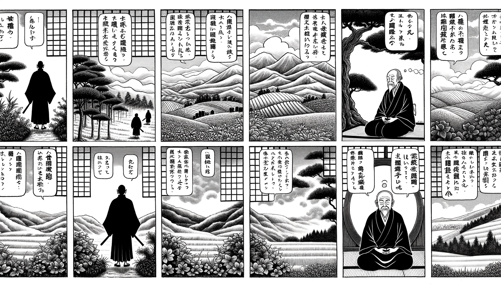

七十五巻 巻一覧
正法眼藏第8 心不可得
本ページは tools/gen_web_volumes.py が doc/正法眼蔵.txt から冒頭を抜粋して生成しています。図・詳細解説は今後の手編集で拡張できます。
出典（原文）: https://shomonji.or.jp/zazen/doc/genzou.html
（ローカル生成の全文: 全文ページ）
この巻の位置づけ（学習メモ）
道元『正法眼蔵』七十五巻の第8篇「心不可得」です。禅籍・経典への引用や語の行間が重なりやすいので、一度ですべてを要約に還元しない読み方を推奨します。問答 Bot では巻スコープにこの題名を含めると応答が安定しやすいことがあります。
語彙の足場
- 題名語：巻題「心不可得」は、道元が本章で特に扱う論点の看板です。辞書義だけに固定せず、本文中の用例で意味を確かめます。
- 引用と典故：公案・経文の引用は、一字一句の照応（何に答えているか）を押さえると全体が見えやすくなります。
- 学び方：冒頭だけでも音読し、分からない箇所は印を付けて後から問うとよいです。
本文（冒頭・自動抜粋）
出典はリポジトリ内 doc/正法眼蔵.txt です。原文の参照元: https://shomonji.or.jp/zazen/doc/genzou.html
釋迦牟尼佛言、過去心不可得、現在心不可得、未來心不可得。
これ佛祖の參究なり。不可得裏に過去現在未來の窟籠を剜來せり。しかれども、自家の宿籠をもちゐきたれり。いはゆる自家といふは、心不可得なり。而今の思量分別は、心不可得なり。使得十二時の渾身、これ心不可得なり。佛祖の入室よりこのかた、心不可得を會取す。いまだ佛祖の入室あらざれば、心不可得の問取なし、道著なし、見聞せざるなり。經師論師のやから、聲聞緣覺のたぐひ、夢也未見在なり。
その驗ちかきにあり、いはゆる徳山宣鑑禪師、そのかみ金剛般若經をあきらめたりと自稱す、あるいは周金剛王と自稱す。ことに靑龍疏をよくせりと稱ず。さらに十二擔の書籍を撰集せり、齊肩の講者なきがごとし。しかあれども、文字法師の末流なり。あるとき、南方に嫡嫡相承の無上佛法あることをききて、いきどほりにたへず、經疏をたづさへて山川をわたりゆく。ちなみに龍潭の信禪師の會にあへり。かの會に投ぜんとおもむく、中路に歇息せり。ときに老婆子きたりあひて、路側に歇息せり。
ときに鑑講師とふ。なんぢはこれなに人ぞ。
婆子いはく、われは買餠の老婆子なり。
徳山いはく、わがためにもちひをうるべし。
婆子いはく、和尚もちひをかうてなにかせん。
徳山いはく、もちひをかうて點心にすべし。
婆子いはく、和尚のそこばくたづさへてあるは、それなにものぞ。
徳山いはく、なんぢきかずや、われはこれ周金剛王なり。金剛經に長ぜり、通達せずといふところなし。わがいまたづさへたるは、金剛經の解釋なり。
かくいふをききて、婆子いはく、老婆に一問あり、和尚これをゆるすやいなや。
徳山いはく、われいまゆるす。なんぢ、こころにまかせてとふべし。
婆子いはく、われかつて金剛經をきくにいはく、過去心不可得、現在心不可得、未來心不可得。いまいづれの心をか、もちひをしていかに點ぜんとかする。和尚もし道得ならんには、もちひをうるべし。和尚もし道不得ならんには、もちひをうるべからず。
徳山ときに茫然として祇對すべきところをおぼえざりき。婆子すなはち拂袖していでぬ。つひにもちひを徳山にうらず。
うらむべし、數百軸の釋主、數十年の講者、わづかに弊婆の一問をうるに、たちまちに負處に墮して、祇對におよばざること。正師をみると正師に師承せると、正法をきけると、いまだ正法をきかず正法をみざると、はるかにこのなるによりて、かくのごとし。
徳山このときはじめていはく、畫にかけるもちひ、うゑをやむるにあたはずと。
いまは龍潭に嗣法すと稱ず。
つらつらこの婆子と徳山と相見する因緣をおもへば、徳山のむかしあきらめざることは、いまきこゆるところなり。龍潭をみしよりのちも、なほ婆子を怕却しつべし。なほこれ參學の晩進なり、超證の古佛にあらず。婆子そのとき徳山を杜口せしむとも、實にその人なること、いまださだめがたし。そのゆゑは、心不可得のことばをききては、心、うべからず、心、あるべからずとのみおもひて、かくのごとくとふ。徳山もし丈夫なりせば、婆子を勘破するちからあらまし。すでに勘破せましかば、婆子まことにその人なる道理もあらはるべし。徳山いまだ徳山ならざれば、婆子その人なることもいまだあらはれず。
現在大宋國にある雲衲霞袂、いたづらに徳山の對不得をわらひ、婆子が靈利なることをほむるは、いとはかなかるべし、おろかなるなり。そのゆゑは、婆子を疑著する、ゆゑなきにあらず。いはゆるそのちなみ、徳山道不得ならんに、婆子なんぞ徳山にむかうていはざる、和尚いま道不得なり、さらに老婆にとふべし、老婆かへりて和尚のためにいふべし。
かくのごとくいひて、徳山の問をえて、徳山にむかうていふこと道是ならば、婆子まことにその人なりといふことあらはるべし。問著たとひありとも、いまだ道處あらず。むかしよりいまだ一語をも道著せざるをその人といふこと、いまだあらず。いたづらなる自稱の始終、その益なき、徳山のむかしにてみるべし。いまだ道處なきものをゆるすべからざること、婆子にてしるべし。
こころみに徳山にかはりていふべし、婆子まさしく恁麼問著せんに、徳山すなはち婆子にむかひていふべし、恁麼則儞莫與吾賣餠（恁麼ならば則ち儞吾が與に餠を賣ること莫れ）。
もし徳山かくのごとくいはましかば、伶利の參學ならん。
婆子もし徳山とはん、現在心不可得、過去心不可得、未來心不可得。いまもちひをしていづれの心をか點ぜんとかする。
かくのごとくとはんに、婆子すなはち徳山にむかふていふべし、和尚はただもちひの心を點ずべからずとのみしりて、心のもちひを點ずることをしらず、心の心を點ずることをもしらず。
恁麼いはんに、徳山さだめて擬議すべし。當恁麼時、もちひ三枚を拈じて徳山に度與すべし。徳山とらんと擬せんとき、婆子いふべし、過去心不可得、現在心不可得、未來心不可得。
もし又徳山展手擬取せずば、一餠を拈じて徳山をうちていふべし、無魂屍子、儞莫茫然（無魂の屍子、儞茫然なること莫れ）。
かくのごとくいはんに、徳山いふことあらばよし、いふことなからんには、婆子さらに徳山のためにいふべし。ただ拂袖してさる、そでのなかに蜂ありともおぼえず。徳山も、われはいふことあたはず、老婆わがためにいふべしともいはず。
しかあれば、いふべきをいはざるのみにあらず、とふべきをもとはず。あはれむべし、婆子徳山、過去心、未來心、現在心、問著道著、未來心不可得なるのみなり。
おほよそ徳山それよりのちも、させる發明ありともみえず、ただあらあらしき造次のみなり。ひさしく龍潭にとぶらひせば、頭角觸折することもあらまし、頷珠を正傳する時節にもあはまし。わづかに吹滅紙燭をみる、傳燈に不足なり。
しかあれば、參學の雲水、かならず勤學なるべし、容易にせしは不是なり、勤學なりしは佛祖なり。おほよそ心不可得とは、畫餠一枚を買弄して、一口に咬著嚼著するをいふ。
正法眼藏第八
爾時仁治二年辛丑夏安居于雍州宇治郡觀音導利興聖寶林寺示衆
図解（4コマ・AI生成）
教義の根拠は本文・出典に従い、漫画は比喩の補助に留めてください。

深掘り（読解のコツ）
- 道元文は定義の羅列に見えても、多くの場合誤解への遮断と正伝の姿勢が背骨になっています。
- 「当体」「現成」「即」などの語が出たら、その巻独自の差別相にどう接続しているかをメモしておくとよいです。